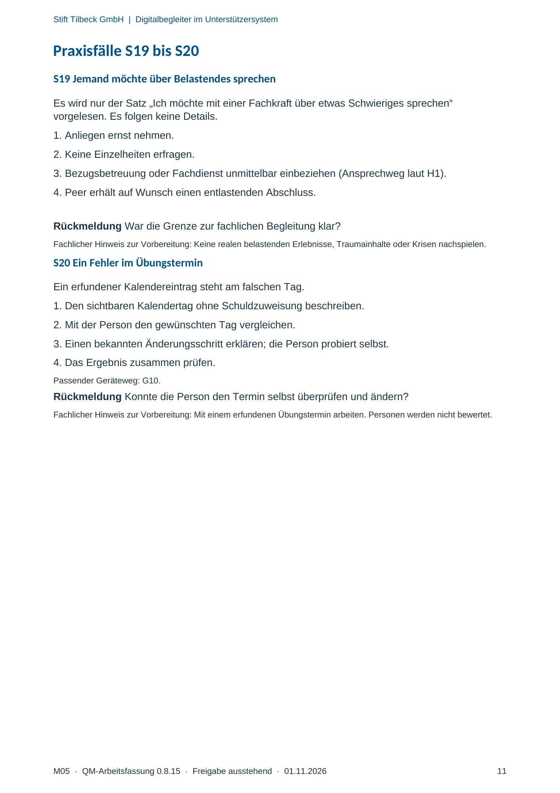

M05 · Originalseite 11
Jemand möchte über Belastendes sprechen
Original-Druckseite mit S19. Auf derselben Seite stehen außerdem S20. Diese sind dadurch keine zusätzliche Aufgabe.
Fragen und Ankreuzfelder werden auf dem Ausdruck bearbeitet. Die Lesefassung speichert keine Antworten.
Lesefassung · Seite 11
Stift Tilbeck GmbH | Digitalbegleiter im Unterstützersystem
M05 · QM-Arbeitsfassung 0.8.15 · Freigabe ausstehend · 01.11.2026 11
Praxisfälle S19 bis S20
S19 Jemand möchte über Belastendes sprechen
Es wird nur der Satz „Ich möchte mit einer Fachkraft über etwas Schwieriges sprechen“
vorgelesen. Es folgen keine Details.
1. Anliegen ernst nehmen.
2. Keine Einzelheiten erfragen.
3. Bezugsbetreuung oder Fachdienst unmittelbar einbeziehen (Ansprechweg laut H1).
4. Peer erhält auf Wunsch einen entlastenden Abschluss.
Rückmeldung War die Grenze zur fachlichen Begleitung klar?
Fachlicher Hinweis zur Vorbereitung: Keine realen belastenden Erlebnisse, Traumainhalte oder Krisen nachspielen.
S20 Ein Fehler im Übungstermin
Ein erfundener Kalendereintrag steht am falschen Tag.
1. Den sichtbaren Kalendertag ohne Schuldzuweisung beschreiben.
2. Mit der Person den gewünschten Tag vergleichen.
3. Einen bekannten Änderungsschritt erklären; die Person probiert selbst.
4. Das Ergebnis zusammen prüfen.
Passender Geräteweg: G10.
Rückmeldung Konnte die Person den Termin selbst überprüfen und ändern?
Fachlicher Hinweis zur Vorbereitung: Mit einem erfundenen Übungstermin arbeiten. Personen werden nicht bewertet.
Originalseite ansehen
